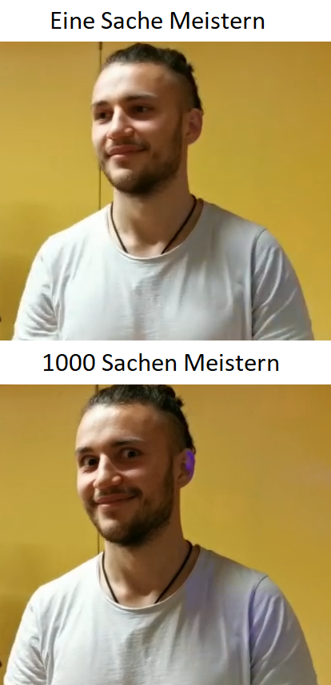
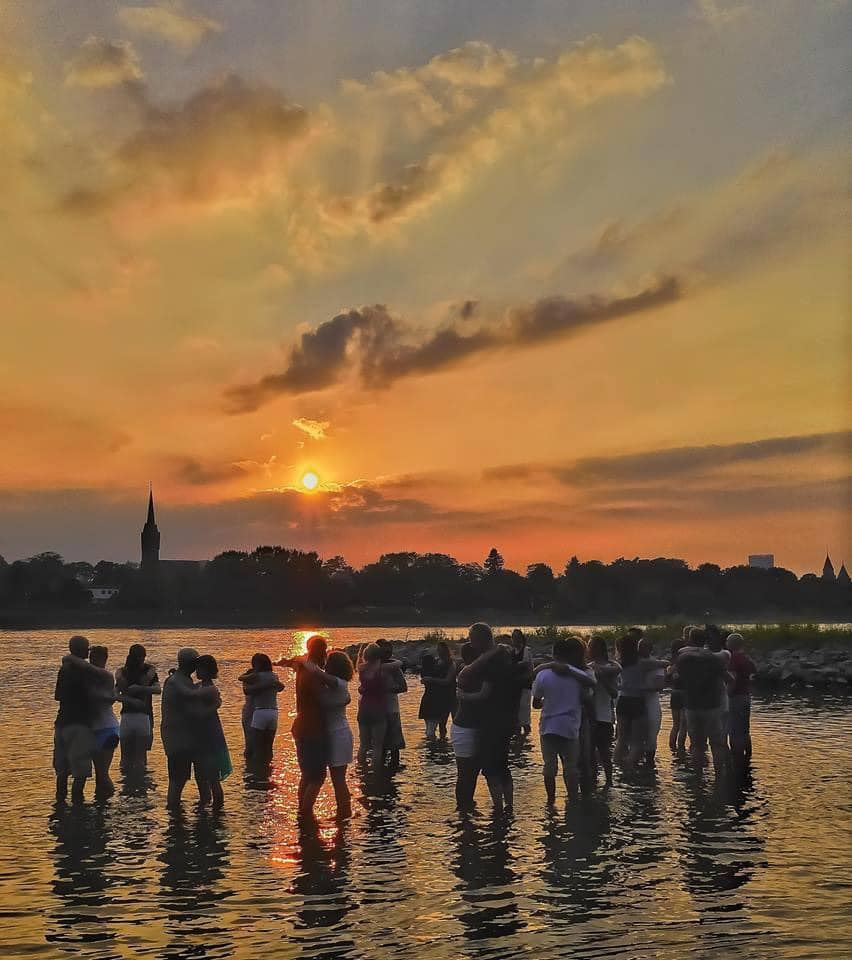

Wer sich in meiner Abwesenheit mit meinen aktuellen/vergangenen Projekten, Visionen und mehr beschaeftigen moechte, wird hier fuendig werden.

Diese Website unterliegt staendigen aenderungen.
Über mich
My brain is for having ideas not for storing them. Not even for executing them (at least most of them, since I produce too many). The ones I execute, I usualy do so with great passion and love to detail.
- Random thought (2023)
Mein Ziel ist es zurzeit mein optimales Gleichgewicht zwischen Stärken vertiefen, Schwächen ausgleichen, Experimentieren, Muse-Zeit und Entspannen zu finden.
- Aus aktuellem (2023) Lebenslauf.
Mein Name ist Johannes Schmidt und bin ein neugieriger, leidenschaftlicher, weltoffener, zielstrebiger und motivierter Student. Mein Ziel ist es zurzeit so viel wie möglich zu lernen, ohne dabei das Mensch sein zu vernachlässigen.
- Ausszug aus einem alten (2016) Motivationsschreiben.

Sonstiges Engagement
- Seminar zu "Förderanträge, Finanzplan, Verwendungsnachweis und Zuwendungsrecht" bei Elvin Ruić
- Im alter von 18 bis 20 Jahren im Kinder- und Jugendparlament Projekte umgesetzt/unterstuetzt, z.B. Skatepark in Bornheim oder Jugendstadtplan
- Seit 2023 mitgestalltung des Unisports Bonn als sog. Obmensch.
- lern-feir e.V., Bonn - Praktikum, Marketing/Kommunikation/Content-Creator (04/2024 - 06/2024)

Foto: Björn (bei einem Tarraxinha Workshop von Shah)
Meine Visionen weisen mir die naechsten Projekte.